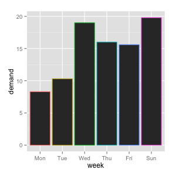

Taiwan R User Group, 2013.07.01
Hello, ggplot2
Introduce high-level R plotting package ggplot2
Slide and sources code are on
GitHub.
Made by Liang Bo Wang under a CC 3.0 BY-SA license.
← → PgUp PgDn to navigate, f for fullscreen and Esc for an overview.
About me
|
 |
今天主題
除了畫圖，還是畫圖
…… 聽起來有點 Low
想像一個情境 …
Deadline 前夕

等於開工的時候

source: hksilicon.com
很容易生出這種圖表
| excel | matlab |
 |
 |
其實還不少 …
 |
 |
不好看…… 而且老闆會生氣
如果是 ggplot2 …

Basic R Plot vs ggplot2
# basic plot
plot(mtcars$wt, mtcars$mpg)
# using ggplot2
library(ggplot2)
qplot(wt, mpg, data=mtcars)


Reason to use R and ggplot2
- 預設值即提供很好的樣式組合（style and layout）
- 各類型圖皆能以簡單指令完成（high-level）
- 以圖層的方式，有系統建構複雜、整合性圖表
- 搭配 R 統計分析，直接呈現資料樣貌
今天的目標
|

|
今天可能無法講到的主題
- 資料前處理
- 圖表資料結構 hack
- 細部調整 → 麻煩參考官網說明 or 參考書
參考書
 |
 |
 |
| 主要參考這本 | R 基礎語法 | 包含 ggplot2 等 R 圖形套件 |
臺灣應該都買得到 Ex. 天壠書局
目錄
- 輸入資料
- 快速瀏覽資料
- C
- D
什麼樣的資料適合作圖？
- 1 row = 1 observation 的
data.frame,csv, ... 檔案 - 格式奇怪的資料，可以透過 Python, R, sed/awk/... 來整理
- 找方法，不如直接問問 Stack Overflow 大神
# in namelist.csv
# data should be one observation per row
"First", "Last", "Sex", "Birth"
"Liang Bo", "Wang", "Male", "1991-01-01"
"Otsuka", "Ai", "Female", "1999-01-01"
# read from csv file
data <- read.csv("namelist.csv",
stringsAsFactors=FALSE,
comment.char='#')
data$Sex <- factor(data$Sex)
str(data) # view data.frame structure
Give Data a Quick View
using basic R plot, ggplot()
and qplot()
sample code: ex_quick
Scatter | Line | Bar | Bar Count | Histogram | Box | Function
back to Quick
Scatter Plot
# basic
plot(mtcars$wt, mtcars$mpg)
# qplot()
qplot(mtcars$wt, mtcars$mpg)
qplot(wt, mpg, data=mtcars) # if they are in same data.frame
# ggplot()
ggplot(mtcars, aes(x=wt, y=mpg)) + geom_point()
| basic | qplot() or ggplot() |
 |
 |
back to Quick
Line Plot
# basic
plot(pressure$temperature, pressure$pressure, type="l")
points(pressure$temperature, pressure$pressure)
# qplot()
qplot(pressure$temperature, pressure$pressure, geom=c('line', 'point'))
# ggplot()
ggplot(pressure, aes(x=temperature, y=pressure)) + geom_line() + geom_point()
| basic | qplot() or ggplot() |
 |
 |
back to Quick
Bar Plot
# basic
barplot(BOD$demand, names.arg=BOD$Time)
# qplot()
qplot(factor(Time), demand, data=BOD, geom="bar", stat="identity")
# ggplot()
ggplot(BOD, aes(x=factor(Time), y=demand)) + geom_bar(stat='identity')
| basic | qplot() or ggplot() |
 |
 |
back to Quick
Bar Plot by Counting
# basic
barplot(table(mtcars$cyl))
# qplot()
qplot(factor(mtcars$cyl))
# ggplot()
ggplot(mtcars, aes(x=factor(cyl))) + geom_bar()
| basic | qplot() or ggplot() |
 |
 |
back to Quick
Histogram of 1-D data
# basic
hist(mtcars$mpg, breaks=10)
# qplot()
qplot(mpg, data=mtcars, binwidth=5)
# ggplot()
ggplot(mtcars, aes(x=mpg)) + geom_histogram(binwidth=5)
| basic | qplot() or ggplot() |
 |
 |
back to Quick
Box Plot
# basic (NOTE: outliers are different from ggplot results!)
plot(ToothGrowth$supp, ToothGrowth$len, names=levels(ToothGrowth$supp))
boxplot(len ~ supp, data=ToothGrowth) # boxplot using formula syntax
boxplot(len ~ supp + dose, data=ToothGrowth) # interaction: supp, dose
# qplot()
qplot(supp, len, data=ToothGrowth, geom='boxplot')
qplot(interaction(supp, dose), len, data=ToothGrowth, geom='boxplot')
# ggplot()
ggplot(ToothGrowth, aes(x=supp, y=len)) + geom_boxplot()
ggplot(ToothGrowth, aes(x=interaction(supp, dose), y=len)) + geom_boxplot()
 |
 |
 |
 |
back to Quick
Function Curve
# basic
curve(x^3 - 7*x, from=-4, to=4)
# plot a user-defined function
# in: numeric vector, out: numeric vector
cumfun <- function(xvec) 1/(1 + exp(-xvec + 5))
curve(cumfun(x), from=0, to=10)
curve(1-cumfun(x), add=TRUE, col='green') # append to same figure
| basic | basic (self-defined function) |
 |
 |
back to Quick
Function Curve (cont'd)
# qplot()
qplot(c(0, 10), fun=cumfun, stat='function', geom='line')
# ggplot()
g <- ggplot(data.frame(x=c(0, 10)), aes(x=x)) # store it first
g + stat_function(fun=cumfun, geom='line') # try geom='point'
ggplot() | ggplot() (self-defined function) |
|
no straight forward way try wrapped by a function |
 |
Box Plots
sample code: ex_box
Not familiar? Start from Quick or back to Box
Set Fill and Color for Box Plot
# use facters as x-axis
weekabbrv <- c('Mon', 'Tue', 'Wed', 'Thu', 'Fri', 'Sat', 'Sun')
BOD$week <- factor(BOD$Time, levels=1:7, labels=weekabbrv)
# try denoting single fill/outline(colour) color
g <- ggplot(BOD, aes(x=week, y=demand))
g + geom_bar(stat='identity', fill='lightpink', color='black')
# using aes() to denote variable-dependent aesthetics
ggplot(BOD, aes(x=week, y=demand, fill=week)) + geom_bar(stat='identity')
ggplot(BOD, aes(x=week, y=demand, color=week)) + geom_bar(stat='identity')
 |
 |
 |
有一天走在路上
想不到要用什麼 dataset 當範例
突然看到這個

......
不如就用教育相關的統計數字當範例
補習班的還沒收集好，多是廣告文宣
可能需要影像辨識，不好爬資料

Open Data? 不如試試教育部的統計資料
教育部 → 重要教育統計資訊 (link)

感覺都蠻好戰的 XD
來個禮貌的起手式
使用的資料表
back to Edu Dataset
大學生就讀類科之比率

如果我們想要看 92 - 101 學年度類科變化的趨勢…
back to Edu Dataset
大學學測總級分人數分布

ggplot2 馬上就可以派上用場
但這筆資料很奇怪，分別存成 1, 2, 3 三檔
相關整理過程放在 twPT2013.csv, read_csv.R 中
Q & A

The set of images are made by chibird.
Take this slide home from
http://ccwang002.github.io/ggplot2-tutorial